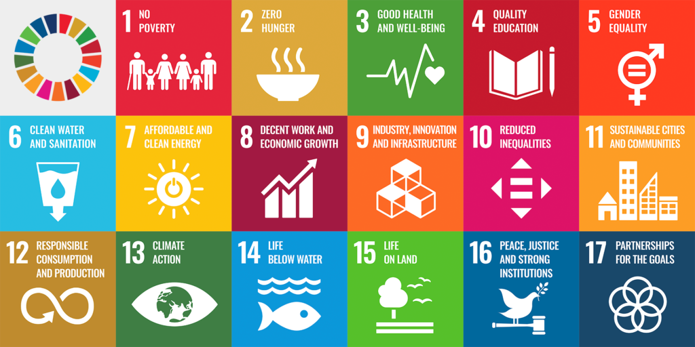

Welcome to the site! Here I will be teaching you all about UN sustainable goals 9 and 11. On top of that, I will show you how they are closely interrelated with each other.
Ready to begin? Before you start navigating the site using the Menu on the top left, let me introduce to the UN Sustainable Development Goals!

Here is a picture showing all of the UN Sustainble Development Goals!
As you can see from the picture, all of these goals are general things which would greatly improve ones well-being.
Things such as 4: Quality Education and 6: Clean Water are generally enjoyed by almost all in developed countries in the world.
However, it does not apply for the entirety of the planet leaving people starving with hunger without things such as education, quality infastrucutre, and gender equality.
This is concerning, and the UN is doing what it can to try and work towards a brighter future for the entirety of humanity.
This is why the SDG goals were created, to benefit mankind and make sure nobody is left behind. Pretty neat right?
On this website, when you navigate using the Menu in the top left, you will learn all about UN development goals 9 and 11.
9: Industry, Innovation, and Infrastructure and 11: Sustainable Cities and Communities are closely connected and I will show you how with my site.
Click through all of the pages on my site, happy learning!
P.S. If you want to make a positive impact on helping society realize the importance of SDGs and work towards in achieving SDG 9 and 11, make sure to read to the very end!